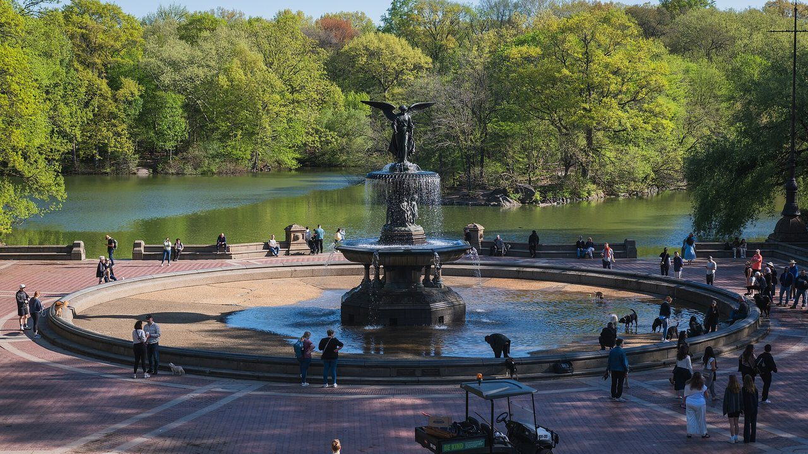

Race, Central Park Loop

Behind
Best +0:01
371W
Target 418 W-47 W
- Cadence
- 87rpm
- Heart
- 140bpm
- Speed
- 26.5km/h
Work2 of 16
0:25
Next: · 1:00 at level 18
-1.6%
9 m climbed
1.05 km
16
Resistance / 32
Solo races your best-time ghost: position reads Ahead or Behind, and solo alone gets a Pause button. Frozen at 2:35.